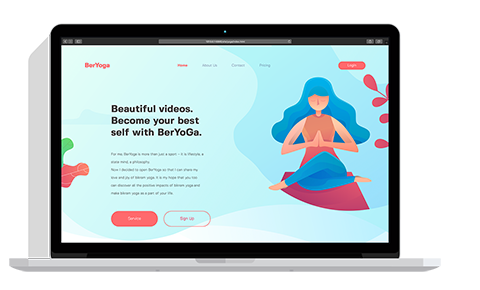

Обо мне
Родился в Сибири на берегу Ангары. Закончил НОВгу, по специальности ... (впрочем не отработал и дня, как позже выяснилось у меня аллергия) С головой ушел в торговлю (добился, как мне кажется, успехов) Учился в Хтмл Академии.
И сейчас я ищу работу.(изучаю верстку и JavaScript, смотрю кино, слушаю музыку, играю во флаг-футбол)
Мои работы
-

Учебный проект "Седона" реализованы индекс страница и гостиницы
-

Учебный проект "Кэт Энерджи" адаптивная верстка всех трех страниц, для телефона, планшета и десктопа.
-

Проект "Торты на заказ" адаптивная верстка лендинга, для телефона, планшета и десктопа.
-

Проект "Портфолио Вебстудии" верстка лендинга для десктопа, с анимацией блоков в шапке сайта.
-

Проект "Интернет-магазина по продаже свежей рыбы" верстка лендинга для десктопа, с настройкой jQuery плагина Owl Carusel 2.
-

Проект "Серф школы" адаптивная верстка, для телефона, планшета и десктопа с помощью фреймворка Bootstrap 4.
-

Проект "Школы йоги" верстка для десктопа с помощью встроенных возможностей Visual Studio Code и предпроцессора SASS
Инструменты
Начнем с начала
Работаю в macOS Mojave.
Разбор макета: Adobe Photoshop, Adobe Assets, Avocode, Zeplin.
Код пишу: Visual Studio Code. Использую плагины: Auto Close Tag, Auto Complete Tag, Auto Rename Tag, Beautify, Beautify css/sass/scss/less, Bootstrap 4, Font awesome 4, Font Awesome 5 Free & Pro snippets, Color Highlight, CSS Peek, Path Autocomplete, ESLint, GitLens — Git supercharged, Gist, Live Server, Open in browser, SVG Viewer, и чуть других (для украшений :).
Использую предпроцессоры Less или Sass
Сборщик Gulp